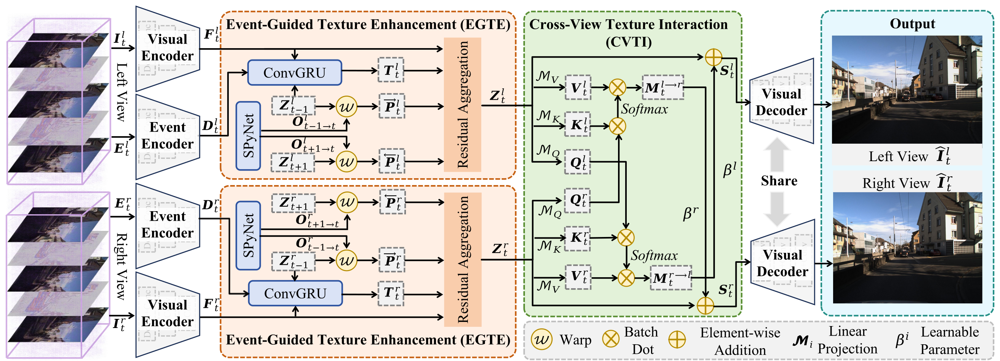
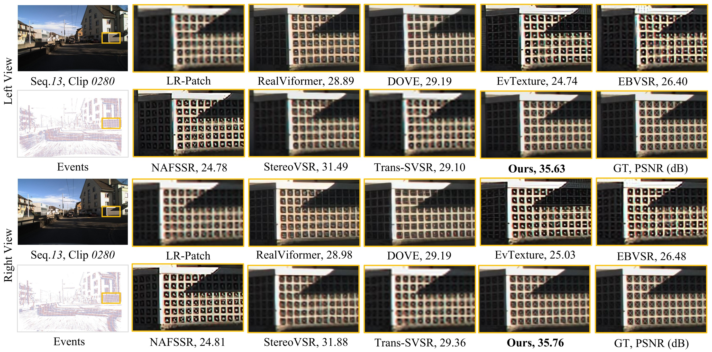
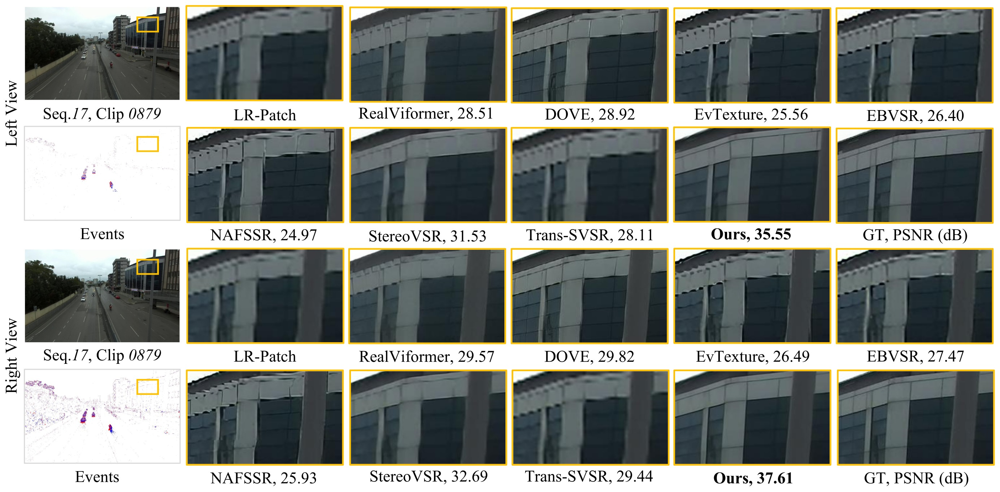

Stereo Video Super-Resolution (SVSR) aims to reconstruct high-resolution stereo videos by exploiting temporal cues across consecutive frames and complementary spatial cues between stereo views. However, existing methods struggle to recover high-frequency texture details under rapid motion and complex illumination, compromising reconstruction quality and stereo consistency. Event cameras provide valuable motion and texture cues with high temporal resolution and wide dynamic range, yet their potential for SVSR remains underexplored. To bridge this gap, we present the first investigation of event-guided SVSR and propose a novel framework. Specifically, we develop an Event-Guided Texture Enhancement (EGTE) module that combines bidirectional temporal feature propagation with event-guided texture refinement to restore high-frequency details in complex motion regions. Subsequently, we introduce a Cross-View Texture Interaction (CVTI) module to model cross-view spatial correspondences and aggregate cross-view complementary texture information. With this design, our method effectively integrates event-driven motion and texture information, inter-frame temporal dependencies, and cross-view spatial relationships to recover motion-affected details and maintain stereo consistency. Extensive experiments on both real-world and synthetic datasets demonstrate that our method consistently outperforms existing super-resolution methods in reconstruction quality and stereo consistency.

Overview of the proposed Event-guided Stereo Video Super-Resolution (EvSVSR) framework. Our EvSVSR consists of two core modules: Event-Guided Texture Enhancement (EGTE) and Cross-View Texture Interaction (CVTI). The EGTE module performs bidirectional recurrent propagation to align intra-view temporal features to the current frame, while the CVTI module establishes cross-view spatial correspondences to facilitate bidirectional feature interaction across stereo views. The pre-trained SPyNet is adopted for optical flow estimation.
| Method | Left view | Right view | Average | EPE ↓ | ||||||||||
|---|---|---|---|---|---|---|---|---|---|---|---|---|---|---|
| PSNR ↑ | SSIM ↑ | LPIPS ↓ | Ewarp ↓ | PSNR ↑ | SSIM ↑ | LPIPS ↓ | Ewarp ↓ | PSNR ↑ | SSIM ↑ | LPIPS ↓ | Ewarp ↓ | |||
| i) | BasicVSR++ | 27.84 | 0.831 | 0.385 | 0.044 | 28.70 | 0.841 | 0.379 | 0.032 | 28.27 | 0.836 | 0.382 | 0.038 | 2.289 |
| SAVSR | 29.73 | 0.882 | 0.366 | 0.039 | 30.50 | 0.889 | 0.360 | 0.028 | 30.12 | 0.885 | 0.363 | 0.034 | 2.029 | |
| DLoRAL | 27.60 | 0.787 | 0.371 | 0.032 | 27.90 | 0.788 | 0.373 | 0.030 | 27.75 | 0.788 | 0.372 | 0.031 | 6.241 | |
| RealViformer | 30.73 | 0.880 | 0.305 | 0.013 | 31.56 | 0.886 | 0.303 | 0.011 | 31.15 | 0.883 | 0.304 | 0.012 | 4.184 | |
| UltraVSR | 27.05 | 0.804 | 0.354 | 0.040 | 27.19 | 0.805 | 0.353 | 0.038 | 27.12 | 0.805 | 0.353 | 0.039 | 3.172 | |
| DOVE | 30.03 | 0.864 | 0.332 | 0.013 | 30.61 | 0.871 | 0.329 | 0.012 | 30.32 | 0.867 | 0.331 | 0.013 | 4.655 | |
| ii) | EvTexture | 28.24 | 0.844 | 0.390 | 0.051 | 29.25 | 0.855 | 0.384 | 0.038 | 28.75 | 0.849 | 0.387 | 0.045 | 2.990 |
| EBVSR | 29.54 | 0.871 | 0.364 | 0.037 | 30.69 | 0.881 | 0.359 | 0.026 | 30.12 | 0.876 | 0.362 | 0.032 | 1.964 | |
| iii) | SSRDE-FNet | 28.40 | 0.864 | 0.372 | 0.050 | 29.31 | 0.873 | 0.366 | 0.037 | 28.86 | 0.868 | 0.369 | 0.044 | 2.204 |
| iPASSR | 28.50 | 0.862 | 0.369 | 0.048 | 29.33 | 0.870 | 0.363 | 0.036 | 28.92 | 0.866 | 0.366 | 0.042 | 2.233 | |
| NAFSSR | 28.21 | 0.890 | 0.360 | 0.048 | 29.05 | 0.897 | 0.354 | 0.036 | 28.63 | 0.893 | 0.357 | 0.042 | 1.877 | |
| iv) | StereoVSR | 34.25 | 0.921 | 0.313 | 0.010 | 35.34 | 0.928 | 0.310 | 0.008 | 34.80 | 0.925 | 0.312 | 0.009 | 1.691 |
| Trans-SVSR | 32.68 | 0.904 | 0.354 | 0.015 | 33.79 | 0.912 | 0.349 | 0.011 | 33.24 | 0.908 | 0.352 | 0.013 | 1.749 | |
| Ours | 36.78 | 0.944 | 0.260 | 0.008 | 37.96 | 0.949 | 0.256 | 0.006 | 37.37 | 0.947 | 0.258 | 0.007 | 1.376 | |
| Method | Left view | Right view | Average | EPE ↓ | ||||||||||
|---|---|---|---|---|---|---|---|---|---|---|---|---|---|---|
| PSNR ↑ | SSIM ↑ | LPIPS ↓ | Ewarp ↓ | PSNR ↑ | SSIM ↑ | LPIPS ↓ | Ewarp ↓ | PSNR ↑ | SSIM ↑ | LPIPS ↓ | Ewarp ↓ | |||
| i) | BasicVSR++ | 27.38 | 0.876 | 0.254 | 0.006 | 26.75 | 0.868 | 0.260 | 0.006 | 27.07 | 0.872 | 0.257 | 0.006 | 2.649 |
| SAVSR | 27.49 | 0.880 | 0.241 | 0.005 | 26.91 | 0.873 | 0.246 | 0.006 | 27.20 | 0.877 | 0.244 | 0.006 | 2.624 | |
| DLoRAL | 27.23 | 0.809 | 0.390 | 0.006 | 26.89 | 0.810 | 0.388 | 0.006 | 27.06 | 0.809 | 0.389 | 0.006 | 6.465 | |
| RealViformer | 29.72 | 0.891 | 0.280 | 0.001 | 29.10 | 0.886 | 0.285 | 0.002 | 29.41 | 0.888 | 0.282 | 0.002 | 4.410 | |
| UltraVSR | 25.65 | 0.817 | 0.326 | 0.008 | 25.38 | 0.816 | 0.327 | 0.008 | 25.52 | 0.817 | 0.327 | 0.008 | 4.073 | |
| DOVE | 29.65 | 0.884 | 0.275 | 0.002 | 29.13 | 0.882 | 0.275 | 0.002 | 29.39 | 0.883 | 0.275 | 0.002 | 4.974 | |
| ii) | EvTexture | 27.17 | 0.878 | 0.251 | 0.006 | 26.30 | 0.861 | 0.258 | 0.008 | 26.74 | 0.869 | 0.255 | 0.007 | 3.342 |
| EBVSR | 27.91 | 0.882 | 0.265 | 0.004 | 27.30 | 0.875 | 0.271 | 0.005 | 27.61 | 0.879 | 0.268 | 0.005 | 2.645 | |
| iii) | SSRDE-FNet | 26.82 | 0.875 | 0.262 | 0.007 | 26.34 | 0.870 | 0.266 | 0.008 | 26.58 | 0.872 | 0.264 | 0.008 | 2.697 |
| iPASSR | 27.04 | 0.877 | 0.261 | 0.007 | 26.52 | 0.872 | 0.264 | 0.007 | 26.78 | 0.874 | 0.262 | 0.007 | 2.707 | |
| NAFSSR | 26.61 | 0.865 | 0.258 | 0.008 | 26.06 | 0.858 | 0.261 | 0.009 | 26.34 | 0.861 | 0.260 | 0.009 | 2.635 | |
| iv) | StereoVSR | 31.82 | 0.926 | 0.220 | 0.014 | 31.23 | 0.921 | 0.223 | 0.015 | 31.53 | 0.924 | 0.222 | 0.015 | 2.407 |
| Trans-SVSR | 30.38 | 0.906 | 0.257 | 0.018 | 29.71 | 0.899 | 0.263 | 0.020 | 30.05 | 0.903 | 0.260 | 0.019 | 2.532 | |
| Ours | 33.84 | 0.945 | 0.175 | 0.001 | 33.37 | 0.943 | 0.176 | 0.001 | 33.61 | 0.944 | 0.176 | 0.001 | 1.994 | |
Quantitative comparison of representative methods for ×4 stereo video super-resolution on DSEC and SVSR-Set datasets. ↑/↓ indicates that higher/lower values are better. The best results are highlighted in bold. i) RGB-based VSR methods; ii) event-guided VSR methods; iii) RGB-based SISR methods; iv) RGB-based SVSR methods.

Qualitative comparison of existing methods for ×4 stereo video super-resolution on the real-world DSEC. Best viewed at 400% zoom.

Qualitative comparison of existing methods for ×4 stereo video super-resolution on the synthetic SVSR-Set. Best viewed at 400% zoom.
In this paper, we present the first investigation of event information for SVSR and propose an event-guided SVSR framework. Our framework employs the EGTE module to recover high-frequency texture details in regions with complex motion and the CVTI module to exploit cross-view complementary information for better stereo consistency. Extensive experiments on real-world and synthetic datasets demonstrate that our method outperforms existing super-resolution methods in reconstruction quality and stereo consistency, while maintaining favorable computational efficiency. This work highlights the potential of event signals for stereo video restoration and provides new insights for future research.
@article{xuan2026evsvsr,
author={Hanyu Xuan and Youtao Yao and Cheng Zhao and Kun Li and Xin Du and Fei Wang and Zhiliang Wu},
title={Event-Guided Stereo Video Super-Resolution},
journal={Under Review},
year={2026}
}